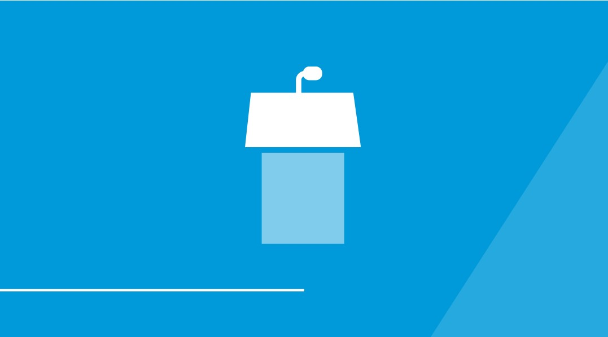

Art & Design
| From its world-class museums to the international diversity of its residents, D.C. is a vibrant city bursting with arts and culture—and GW’s Columbian College is right in the thick of it. The renowned Corcoran School of the Arts and Design is a cornerstone of the D.C. community and, as a school within Columbian College, it continues to nurture students and practitioners in the creative fields while also enriching those pursuing other areas of study. |

|
Humanities
| Policy and the sciences determine what we do; the humanities determine who we are. Our faculty and students are engaged in research and learning that reaches around the world in areas such as languages, religious understanding and philosophical exploration. In today’s 21st-century global society, there is a growing need for individuals steeped in these fields of study. |

|
Mathematics & Statistical Analysis
| Our quantitative programs are preparing the next generation of analytical experts with both the practical and theoretical knowledge needed to extract actionable solutions through sophisticated processes and techniques. From positions in the Department of Homeland Security to the nation’s high-tech corridors, these skills translate into a variety of high-demand career paths. | |
Natural & Forensic Sciences
| Look inside our labs and you’ll find students working with faculty to develop revolutionary carbon dioxide-free methods to reduce global warming, searching for ways to mitigate the diminishing honey bee population or exploring supermassive black holes to gain a better understanding of the origins of our universe. Our innovative Science and Engineering Hall is further propelling learning and discovery through interdisciplinary collaboration and the use of cutting-edge technology. |

|
Policy & Public Affairs
| Our location in the heart of the nation’s capital—at the very intersection of diplomacy, legislative affairs and executive action—makes Columbian College the place for immersion in the study of policy, journalism and public administration. Our access, engagement, and proximity are unparalleled and reflective of our programs, which are ranked among the best in the country. |  |
Social & Behavioral Sciences
| The social and behavioral sciences touch a broad swath of our daily lives. For example, geography students are mapping immigration trends in urban areas, students of anthropology are unlocking the patterns of human aging and psychology students are exploring the “nature vs. nurture” theories behind childhood obesity. Their studies are helping them gain a clearer understanding of our past in order to provide better insight into our future. |

|
|